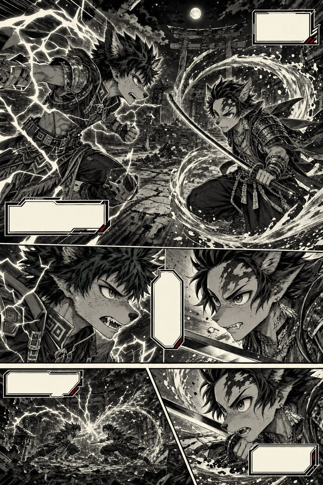

Izuku Midoriya
vs Tanjiro Kamado
A Detroit Smash carried by nine generations of strength, against thirteen sword forms chained without a single pause. The ground is neutral. The restraint, much less so.
Complete duel, verdict included — freeThe rules of this duel
A heroic, pure-hearted register: neither one is trying to kill, both are trying to protect or to understand. Neutral terrain, with no obstacle or object to exploit.
Ground
An open plain, late-afternoon light. A bare-handed or bare-blade duel, with no set-piece variable.
Victory condition
Neutralization of the opponent — to protect or to understand, never to kill.
Canon snapshot — Deku
My Hero Academia (Kohei Horikoshi, 2014–2024), pre-final battle: all six latent Quirks mastered at 100% alongside OFA, the cumulative wear already present, but before Shigaraki's Decay and the power's extinguishing.
Canon snapshot — Tanjiro
Kimetsu no Yaiba (Koyoharu Gotoge, 2016–2020), just before the final confrontation with Muzan: full mastery of the Hinokami Kagura, the Transparent World, and the selfless state — before his temporary transformation into a demon.
The fighters
Born Quirkless in a society where roughly 80% of humanity has one, Izuku Midoriya should have been an invisible nobody. His meeting with All Might, the Symbol of Peace, changes everything: the hero passes on to him One For All, a stockpiling Quirk transmitted from generation to generation for nearly a century. This power isn't just super-strength — it's a reserve of energy that grows with each holder, stacking the physical power of nine generations.
Over the course of the manga, Deku unlocks the previous holders' latent Quirks: Gearshift (altering a target's inertia, 2nd holder, Kudo), Fa Jin (storing and releasing kinetic energy, 3rd, Bruce), Danger Sense (detecting imminent danger, 4th, Hikage Shinomori), Blackwhip (whips of energy, 5th, Daigoro Banjo), Smokescreen (a cloud of smoke, 6th, En), and Float (levitation, 7th, Nana Shimura — All Might's own mentor, with no blood relation to Deku: the thread linking the nine holders is one of mentorship, not lineage).
The cost is real: over the course of the manga, repeatedly overusing One For All past the safe threshold breaks fingers and joints, well before the final battle even begins. It's the core of the character: Deku destroys himself to save others. He doesn't know how to do otherwise — a trait this fiche keeps, even though the chosen snapshot precedes the most extreme episode of that logic: the momentary disintegration of his arms by Shigaraki's Decay, swiftly repaired, and above all the permanent extinguishing of One For All that follows (see canon nuances).
The eldest son of a family of charcoal burners in the mountains, Tanjiro's life is upended when the original demon, Kibutsuji Muzan, slaughters his family and turns his sister Nezuko into a demon. Taken in by Sakonji Urokodaki — a former Water Hashira, now retired from active combat — he learns Water Breathing, passes the Final Selection, and joins the Demon Slayer Corps.
But the real revelation comes later: the style he practices is in fact the Hinokami Kagura — a legacy from his father and, more fundamentally, Sun Breathing, the original style from which every other Breathing derives. Thirteen forms chained into one continuous cycle, meant to be performed from dusk to dawn without interruption.
Over the course of his fights — against Rui, the Twelve Kizuki's Lower Rank Five, then against Upper Ranks Daki and Gyutaro, Hantengu and Akaza — and finally against Muzan himself, Tanjiro unlocks two states of perception: the Transparent World (Tomei na Sekai), which lets him see an opponent's muscles, blood flow, and motor intentions, and the selfless state (Muga no Kyochi), which erases all combative presence and makes him unreadable.
Tanjiro fights with a Nichirin blade — a black sword that turns glowing red under the effect of Sun Breathing. His sense of smell is superhuman: he perceives emotions, lies, and above all an opponent's "opening" (suki). He is a boy who cries while striking. Who apologizes to the demons he beheads. Who refuses to hate.

The table
| Criterion | Deku | Tanjiro |
|---|---|---|
| Physical strength A single strike from Deku at 100% generates a shockwave no human body absorbs unscathed. | 10 | 6 |
| Speed / reflexes Even at a low OFA percentage, Deku's speed exceeds what the Transparent World alone can compensate for. | 9 | 6 |
| Resilience / endurance Tanjiro already fights with broken bones in his own canon; Deku absorbs punishment too, but pays OFA's price for it. | 8 | 7 |
| Destructive power / range The Detroit Smash levels the scale; Tanjiro's solar forms remain targeted blade strikes. | 9 | 5 |
| Combat technique Thirteen chained forms against raw power still poorly refined in pure swordsmanship. | 6 | 9 |
| Perception / tactical intelligence Superhuman smell and the Transparent World read a body better than Danger Sense reads an intention. | 7 | 9 |
| Willpower / mental fortitude Two wills that refuse to hate their opponent — Tanjiro's has already been through more trials. | 8 | 9 |
| Duel factor (weapon: body / blade) A body carrying accumulated energy against a blade that turns white-hot — two weapons, neither one neutral. | 7 | 8 |
| Total / 80 | 64 | 59 |
The scored table is nearly even — Tanjiro offsets every point of raw power with a point of technique or perception. But that close score hides an asymmetry the addition alone doesn't capture: the two criteria where Deku dominates by a wide margin (strength, speed) operate on a different scale than the ones where Tanjiro pulls back ahead.
What each one can do
One For All at full power
Every strike carries the accumulated energy of nine holders. A Detroit Smash at 100% generates a massive shockwave. In Full Cowl, the power is distributed across the whole body.
Blackwhip
Whips of black energy that burst from the body. Reach, grapple, redirection at range.
Fa Jin
Stores the kinetic energy of repeated motion and releases it in a single explosive burst.
Gearshift
Alters the inertia of an object or person touched — on contact.
Danger Sense / Float / Smokescreen
Detects any imminent danger within a close radius, complemented by levitation, three-dimensional mobility, and a smoke cloud.
Power control
Deku can modulate the percentage of OFA he uses, so as not to break his opponent.
Hinokami Kagura — 13 forms
A continuous cycle of twelve individual forms chained into a thirteenth. In a duel, he can chain several forms within seconds.
Red Nichirin blade
A sharp steel katana, whose anti-regeneration property against demons has no effect here.
Transparent World
An internal view of the opponent: muscles, tendons, blood flow, preparatory contractions.
Superhuman smell
Detects suki (an opening), emotions, heart rate, fatigue.
Selfless state
Erases all combative presence — a problem for Danger Sense, which looks for a perceptible threat.
Pain tolerance
Fights with broken bones against Akaza, confronts Muzan half-blind. His will doesn't give as long as his heart beats.
The asymmetry
Deku wins the moment raw speed comes into play.
— what each fighter has to accomplish —
Tanjiro wins if he strikes before the power gap makes itself felt.
Canon boundaries
Nothing in My Hero Academia shows Deku absorbing a sharp blade at full power, since his opponents are almost always Quirk users rather than swordsmen — the question therefore has no certain canon answer. The scenarios below take the most cautious approach: a clean Nichirin strike would wound Deku like any other opponent, with no absolute certainty on how deep the damage runs, rather than arbitrarily settling the question in either side's favor.
The Nichirin's best-known power — inhibiting demon regeneration — plays no role here: Deku isn't a demon. This canon property, decisive in many of Tanjiro's fights, is set aside for this match-up.
The cumulative wear from OFA — fingers and joints broken by repeated use — is real and documented from the very first arcs: this snapshot rightly keeps it. During the final battle against Shigaraki / All For One, an entirely different event occurs: on direct contact with Shigaraki's Decay Quirk, during the sequence where Deku holds young Tenko inside his own mindscape, his arms disintegrate up to the elbows.
But this spectacular wound isn't permanent — in that same arc, Aizawa regenerates them within minutes using a fragment of Eri's horn (her rewind power); Deku goes on to finish the fight against All For One with both arms, and keeps them through the epilogue, eight years later. What never comes back, on the other hand, is One For All itself: exhausted by that battle, the power goes out for good — and it's that loss, not the loss of his arms, that truly closes out the character's arc. This fiche therefore keeps the cumulative wear without borrowing the Decay/arms episode, which belongs to a distinct — and, either way, temporary — canon moment.

The two scenarios
The plain is bare to the horizon — not a rock, not a tree, nothing but the low light of late afternoon and two silhouettes bowing to each other with matching restraint. Tanjiro tilts his head, sword held low. Deku bows back, a faint charge already crackling along his forearms — a minimal percentage, almost symbolic.
"Five percent," he murmurs to himself, more out of habit than necessity. "Maybe six, with the margin for..."
He doesn't get to finish the sentence. Tanjiro has already launched — the first form of the Hinokami Kagura, a line of red light that should, against any human opponent, cut clean through. Deku settles for a step to the side. Even at this negligible percentage, his speed devours the space the blade takes to cross. A palm strike to the chest, light, measured — just enough to push Tanjiro back three meters without breaking anything.
Tanjiro straightens up, adjusts his stance, an almost admiring smile on his lips. He chains several solar forms within seconds, less trying to wound than to map out what he's facing. Deku blocks the first with his forearm — the blade bites, a thin gash opens, warm blood confirming at least one thing: the Nichirin can touch him. He deflects the second with a Blackwhip that catches the flat of the blade, and on the third, he accelerates. Fa Jin. One burst, and he's already behind Tanjiro before the swordsman finishes his motion.
Tanjiro doesn't turn at random — his sense of smell, already at full alert, has tracked the movement better than his eyes could have. He pivots, blade tracing a perfect arc toward Deku's throat.
But Deku saw it coming before Tanjiro even moved: Danger Sense had warned him half a second earlier, a half-second that, for him, feels almost like an eternity. He steps back, lets the blade pass an inch from his chest, and simply rests his hand on Tanjiro's shoulder.
Tanjiro freezes mid-motion, blade still extended, breath caught somewhere between the swing and the strike that never lands. He hasn't been overpowered so much as outpaced by a margin his own senses can register but not close.
"Gearshift."
The Slayer's inertia collapses all at once; his legs stop responding, as if the ground itself had changed nature beneath his feet. Tanjiro falls to his knees, sword still in hand, body motionless.
Deku crouches beside him, sincerely sorry. "I'm sorry. I didn't mean to..."
Tanjiro smiles, without a trace of bitterness. "No. That was beautiful."
Same plain, same fading light. Tanjiro slips almost immediately into the Transparent World: Deku's muscle fibers light up before his eyes, the energy circulating through his limbs, and — lower, more discreet — an old trace, joints rebuilt so many times they still carry the memory of every fracture. A body that has paid, and keeps paying, for every ounce of power it releases.
He doesn't engage on speed. He waits, slips into the selfless state — his scent fades, his combative presence dissolves into the air as if it had never existed. Deku's Danger Sense sweeps the horizon, searching for an imminent threat, and finds nothing to latch onto.
For a fighter who has spent his whole career reading the first sign of trouble before it arrives, that silence is its own kind of warning — the absence where a threat should be.
"That's..." Deku hesitates half a second, searching for a threat his own powers refuse to show him.
It's too much. Tanjiro erupts into the thirteenth form of the Hinokami Kagura — thirteen strikes chained into a single breath, each one aimed at the hands and wrists, exactly the areas years of repeated OFA use have already weakened. The first is blocked, but the vibration travels further up Deku's arm than it should. The second is dodged by a hair; Tanjiro has already changed angle. From the third to the fifth, Deku falls back, trying to find a rhythm he can no longer impose — every counter he reaches for is already a half-step behind where Tanjiro actually is.
Sixth strike: Blackwhip tries to seize the blade. Tanjiro simply slides out of reach, as if he'd already read the motion before it left. Seventh, eighth — Deku attempts Fa Jin, but the Transparent World saw the contraction forming in his muscles a fraction of a second before it became movement, and Tanjiro is already gone by the time the burst releases. From the ninth to the eleventh, Deku is cornered, desperately seeking the contact that would activate Gearshift — but Tanjiro never lets him get close enough.
Twelfth strike: the red blade stops a millimeter from Deku's throat, motionless, as if held back by a decision rather than a lack of momentum. For the first time in the exchange, Deku doesn't move at all — not because he can't, but because he already understands there's nothing left to counter.
Thirteenth form. Tanjiro sheathes his sword.
"Your arms already carry the marks of many battles, sir," he says, without irony, almost with respect.
Deku, on his knees, bursts into a soft, sincere laugh. "You're incredibly kind, you know that?"
The verdict
scenarios out of 10
Here is the gap between the scored table (64 against 59, nearly even) and the scenario verdict (8/10): the table adds up criteria as if they played on the same field, but strength and speed for Deku aren't of the same nature as technique and perception for Tanjiro. At 100%, a single strike from Deku generates a shockwave Tanjiro can neither parry with a sword nor absorb with a human body, however reinforced it may be.
Tanjiro keeps a real chance under two precise conditions: that Deku already carries the aftereffects of heavy One For All use, and that the Slayer reaches the selfless state early enough to catch Danger Sense off guard. That's Scenario B — but it demands a flawlessness of execution that even Akaza, in full possession of his own abilities, failed to maintain against Tanjiro.
What makes this duel unforgettable isn't the winner. It's that neither one truly wants to win. Deku is trying to protect, not to defeat. Tanjiro is trying to understand, not to kill. The fight ends with a handshake and a question from Tanjiro: "Is your mother doing well?" Deku smiles. "Yes. She's safe." — "Then that's all that matters."
Over to you
The chosen snapshot deliberately excludes the most extreme episode of the final battle — disintegrated then repaired arms — and the extinguishing of One For All. A Deku with no OFA at all would change the equation; but would a Deku whose arms have just been regenerated, still reeling, make Scenario B more likely — or does nothing really stop him?
If you disagree, that means it worked. Pass this sheet to someone who'll disagree even more.
The same sheet, laid out for print and for sharing.